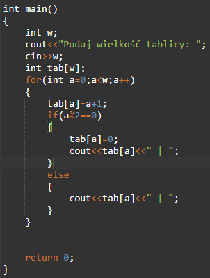

Wybierz zadania 🔥
Zadania z
Języków programowania
7`02
| Zadanie 7 - Tablica deklarowana przez użytkownika
27`03
| Dodatkowe zadania z tablic
| OBOWIĄZKOWE ZADANIE DLA WSZYSTKICH
25`05
| Zadanie 1 - JS
5`06
| Zadanie JS - Pętla FOR
Powrót na ekran główny
Napisz program w którym użytkownik poda wielkość tablicy jednowymiarowej i wstawi dowolne liczy, ale tylko w parzyste indeksy tablicy.
Indeksy nieparzyste uzupełni program sam liczbą zero.
